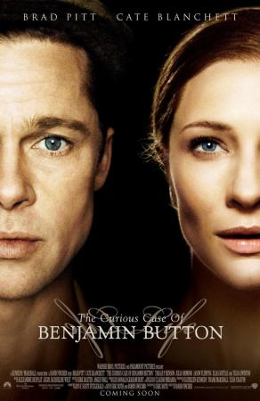

| Pelicula: |
The Curious Case Of Benjamin Button |
Reparto: |
Brad Pitt, Cate Blanchett, Taraji P. Henson, Tilda Swinton, Jason Flemyng, Julia Ormond, Elias Koteas, Elle Fanning, Jared Harris, Mahershala Ali, David Jensen, Tom Everett, Faune Chambers Watkins, Donna Duplantier, Ed Metzger, Danny Vinson, Fiona Hale, Marion Zinser, Patrick Thomas O'Brien, Phyllis Somerville, Ted Manson, Lance E. Nichols, Danny Nelson, Peter D. Badalamenti, Robert Towers, Sonya Leslie, Edith Ivey, Madisen Beaty, Shiloh Jolie-Pitt |
Genero: |
Fantástico. Romance. Drama | Años 80. Años 90 |
Sinopsis: |
Un hombre (Brad Pitt) nace con ochenta años y va rejuveneciendo a medida que pasa el tiempo; es decir, en lugar de cumplir años los descumple. Esta es la historia de un hombre extraordinario, de la gente que va conociendo, de sus amores y amistades, pero sobre todo de su relación con Daisy (Cate Blanchett), la mujer de su vida. |